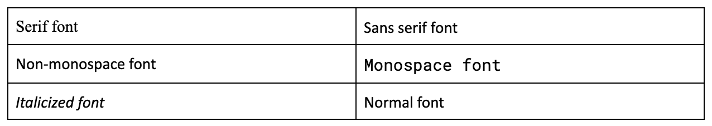

A key element of designing accessible course materials is creating accessible and intuitive layouts. This includes structuring content clearly in terms of headings and hierarchy, making content visually appealing, and writing for clarity.
We can use Robin William’s, unfortunately named, CRAP principles to establish our basic tenets of readability, which can be applied to syllabi, slides, handouts, and course webpages.
C is for Contrast
This involves using differences in size, color, or style to draw users’ attention to important portions of content. It also encompasses font color and background color contrast, which is particularly important for low-vision users.
When considering text style, it’s important to keep in mind the readability of fonts. Certain fonts have small lines on the ends of letters, referred to as “serifs.” Sans-serif fonts do not have serifs and are more readable to dyslexic users. Popular sans-serif fonts include Arial, Helvetica, Verdana, Calibri, and Century Gothic.
Monospace fonts (fonts where each letter takes up the same amount of space) have more space between letters and are also more readable. Italicized fonts are typically more difficult to read and should be avoided if possible. Finally, keeping font size at 12p minimum is optimal for readability.

In addition to focusing on fonts, the overall contrast of a website should be strong to increase accessibility. Dark-colored text should have a light background and vice versa for maximum readability. Headings and section labels should also be visually differentiated from paragraph text to make distinct sections or subsections clearer.
R is for Repetition
Design strategies should be repeated throughout content to provide a sense of cohesion and connection. Inconsistency in design layout can make content more difficult for users to follow. For example, all headings should have the same size, font, and alignment throughout a webpage. If a document has page numbers, they should be in the same corner of each page.
A is for Alignment
Alignment refers to the arrangement of the entire content page or document. Items should be arranged in a clear and deliberate manner. Space between items should be equalized and consistent, and related items should be arranged in the same format.
P is for Proximity
Related items should be grouped together. When elements are positioned next to each other in various ways, users can infer that they have some form of relationship. Examples include:
Plain Language - Writing for Clarity
In addition to following the CRAP guidelines for structuring pages of content, it’s also important for the text materials themselves to be as accessible as possible. Writing with plain language is beneficial to all users because it helps people find the information they need and understand and utilize that information. To write for clarity, content should:
Summary
When a document has clear contrast, repetition, alignment, and proximity, it benefits students who have:
Repetition reduces the amount of “re-learning” a student has to do as they move through course content. When layout and structure stay consistent, students can focus more on understanding the material instead of figuring out how to navigate it each time.
Reflection Questions